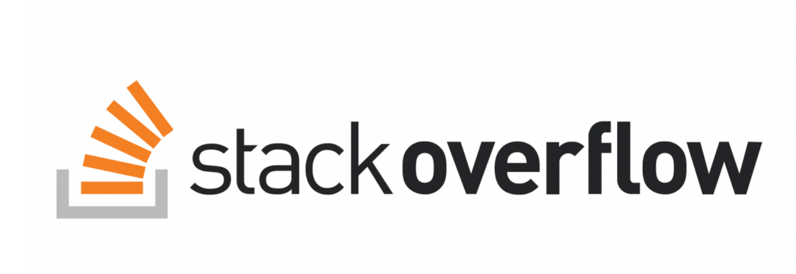
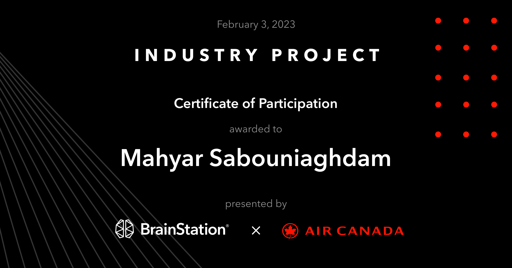
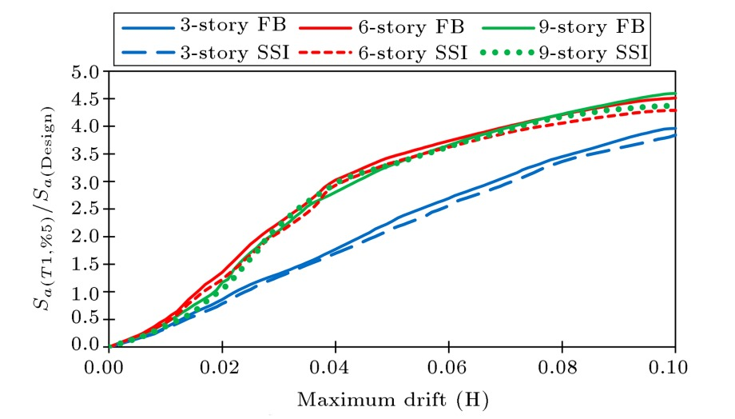

This capstone project aims to create a machine learning
model that predicts the quality of questions posted on Stack Overflow,
a popular question-and-answer platform for software developers. Stack Overflow
receives millions of questions each year, and it is crucial to determine the quality
of these questions to maintain the platform's reputation as a reliable source of information.
About 6% of all new questions end up being closed, which can negatively impact the user experience.
Improving the quality prediction of questions on Q&A platforms is a relevant problem
area to apply data science techniques and my project adds business value by enhancing the user
experience of Stack Overflow users.

The goal of this project is to use Natural Language Processing (NLP) techniques to analyze hotel reviews and gain insights into customer opinions and experiences to classify hotel reviews.
This project aims to perform a detailed analysis of the Superstone sales dataset using Microsoft Power BI. Superstone is a fictional company that sells various products, including furniture, office supplies, and technology equipment.
The aim of this project is to apply the skills and knowledge of the Big Data Fundamentals unit to load, filter, and visualize a large real-world dataset in a cloud-based distributed computing environment by using Amazon Web Services (AWS).
This Project investigates how people use Bixi bikes, what factors influence the volume of usage, popular stations, and overall business growth using SQL and Tableau.

The goal of the project is to diagnostically predict whether or not a patient has diabetes by using IBM SPSS Modeler and Microsoft Excel Data Analysis tool.

Collaborated as a data scientist within a team for an industry hackathon project hosted by Air Canada and BrainStation. Our goal was to develop a comprehensive solution package to tackle a specific business challenge.
West Nile Virus (WNV) is a viral illness largely spread by mosquitoes. In this project, I performed EDA, data wrangling and a set of analyses on the relationship between the different variables and the mosquito number, as well as the probability of finding West Nile Virus (WNV) at any particular time and location.

This paper investigates the seismic performance of intermediate moment-resisting steel frame structures considering the effects of height and soil-structure interaction. For this purpose, three 3D structures of 3-, 6-, and 9-story buildings were designed using CSI ETABS software in accordance with ASCE7-16.